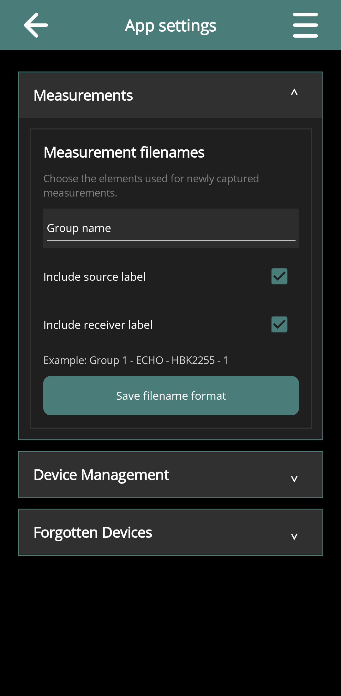
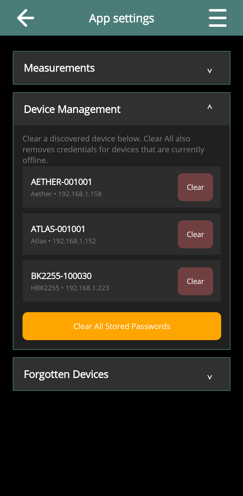
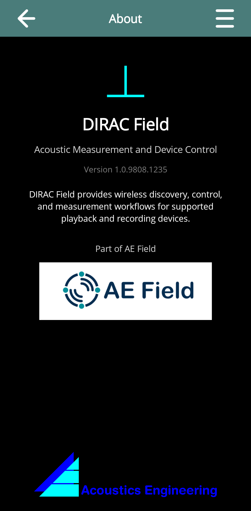

Application Settings
Draft for review: These DIRAC Field instructions and illustrations are being reviewed.
On this page
Open App settings
Return to Devices and choose menu → Settings. The page is titled App settings. It contains Measurements, Device Management and Forgotten Devices sections. Tap a heading to expand it.
If Settings was opened from a connected device's control page, it refers to that device instead. Return to a general page when you want to change the app-wide preferences below.
Measurement filenames
Under Measurements, choose the elements for newly captured measurement filenames:
- Prefix: Project name, Group name or Fixed string.
- Fixed prefix: the text to use when Fixed string is selected.
- Include source label and Include receiver label: optional identity elements.
Check the example filename and choose Save filename format. The saved format is used for new captures. Existing measurements retain their names; edit an existing name through its metadata editor when necessary.


Stored device passwords
Device Management lists discovered devices for which the app has a stored password. Use the device's Clear action to remove its stored credential, then reconnect and enter the current password if required.
Clear All Stored Passwords also removes credentials for devices that are currently offline. Read the confirmation and ensure that the required device passwords are available before clearing them.
These actions clear the app's saved credentials. They do not change a device's active password, erase a project's recordings or remove an access-point password stored in the equipment.


Forgotten devices
A device hidden with Forget on its discovery card appears under Forgotten Devices. Choose Unblock to allow it to appear again. Return to Devices and refresh if necessary.
Unblocking does not power up unreachable equipment, change its network or bypass authentication. If it still cannot be reached, use the connection checks.

About and help
menu → About identifies DIRAC Field and shows its application version. This is separate from a connected instrument's Software version. Include both when reporting a device-control problem.
Help from a general page opens this manual. On a device page it opens the equipment's help or manufacturer's documentation. Use this manual's Device Controls chapter for the app's device-specific procedures.

